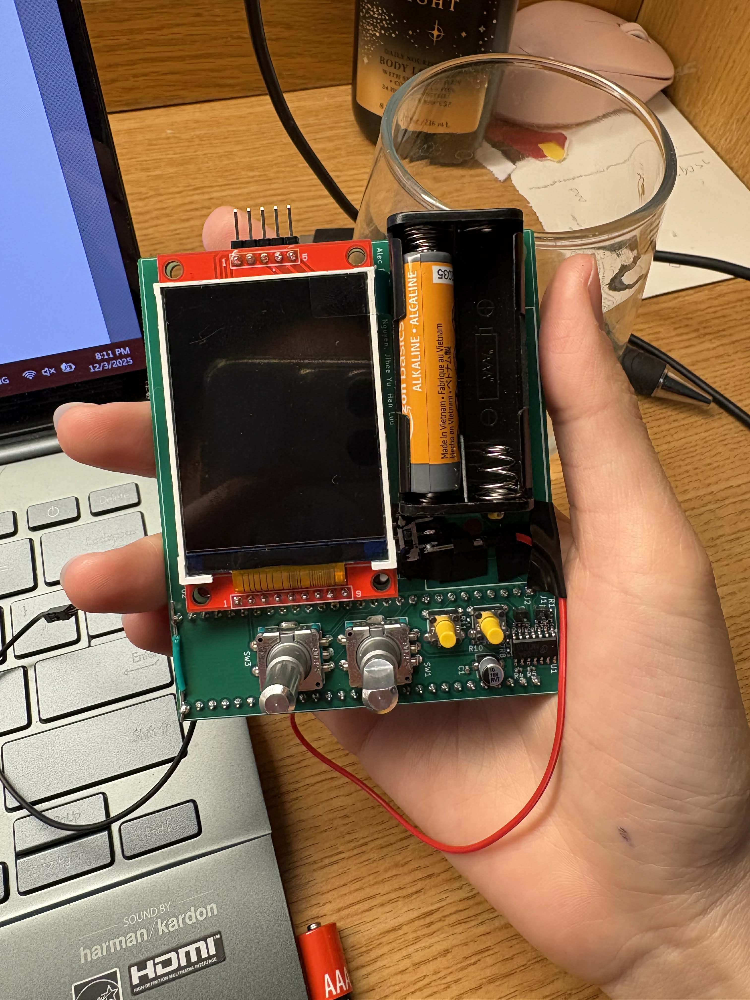
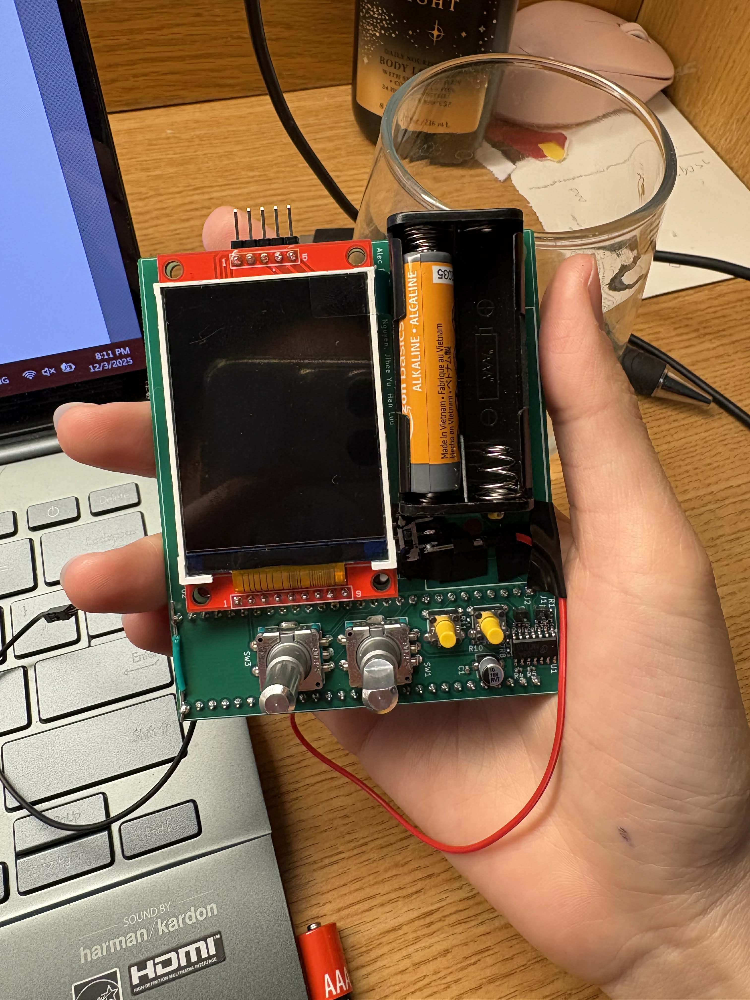
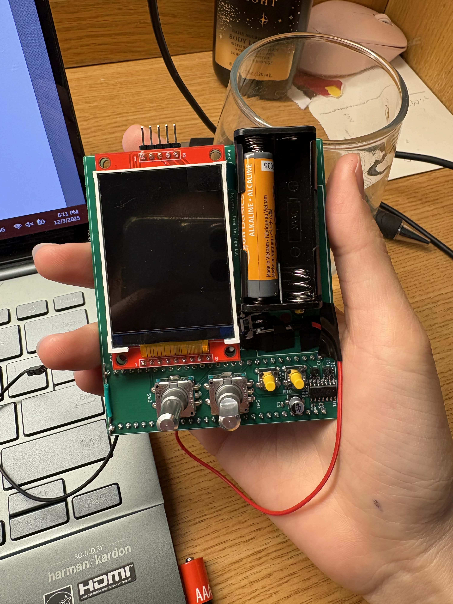

My technical aspiration has always been environmental and sustainablity centric. Other than the projects from different ECE courses, all the work that I do revolve around the environment and building sustainable solutions.
